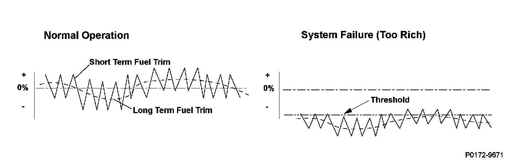
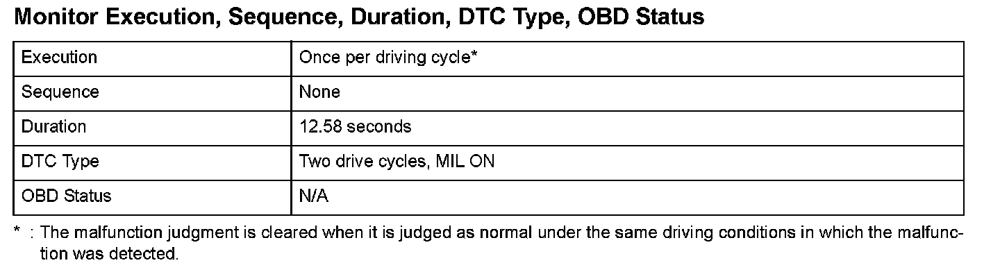
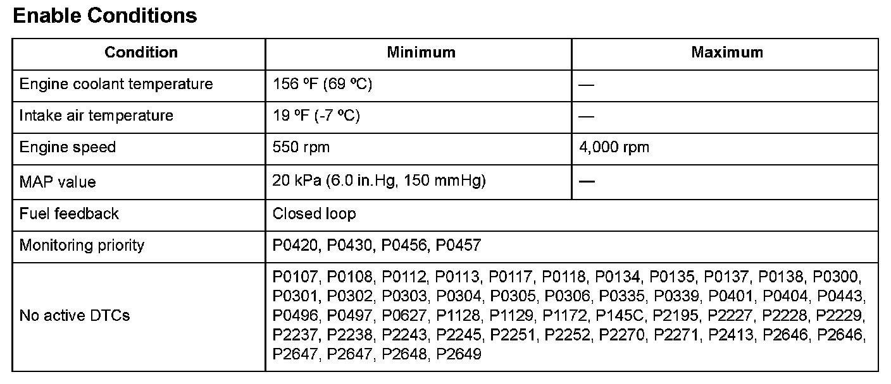

Advanced Diagnostics
DTC P0172: Rear Bank (Bank 1) Fuel System Too Rich
General Description
The powertrain control module (PCM) detects the oxygen content in the exhaust gas from the rear air/fuel ratio (A/F) sensor (bank 1, sensor 1) signal voltage, and it uses fuel feedback control to maintain the optimal air/fuel ratio. The air/fuel ratio coefficient for correcting the amount of injected fuel is the short term fuel trim. The PCM varies short term fuel trim continuously to keep the air/fuel ratio close to the stoichiometric ratio for all driving conditions. Long term fuel trim is computed from short term fuel trim and is used to regulate long term deviation from the stoichiometric air/fuel ratio, which occurs when fuel metering components deteriorate with age or system failures occur. In addition, long term fuel trim is stored in the PCM memory and is used to determine when fuel metering components malfunction. When long term fuel trim is higher than normal, which is about 1.0 (0 %), the amount of injected fuel must be increased, and when lower than normal, it must be decreased. If long term fuel trim is lower than normal (too rich), a malfunction in the fuel metering components is detected and a DTC is stored.

Monitor Execution, Sequence, Duration, DTC Type, OBD Status

Enable Conditions
Malfunction Threshold
Long term fuel trim is lower than 0.844 (-15.6 %).
Driving Pattern
1. Start the engine. Hold the engine speed at 3,000 rpm without load (in Park or neutral) until the radiator fan comes on.
2. Then, drive at a steady speed between 15 - 75 mph (24 - 120 km/h) for at least 15 minutes, and watch the long term fuel trim. If the long term fuel trim stays at about 1.0, the vehicle is OK or it is a very minor problem. If a significant fault is still present, the long term fuel trim will move up or down while driving.
- When freeze frame data is stored, drive the vehicle under those conditions instead of Driving Pattern 2.
- If the EVAP monitor runs instead of the HO2S monitor, turn the engine off, then restart it, and the HO2S monitor will restart.
- After clearing the DTC by disconnecting the battery or using the scan tool, extend Driving Pattern 2 to 40 minutes or longer to allow time for long term fuel trim to recover.
- Drive the vehicle in this manner only if the traffic regulations and ambient conditions allow.
Diagnosis Details
Conditions for illuminating the MIL
When a malfunction is detected during the first drive cycle, a Temporary DTC is stored in the PCM memory. If the malfunction recurs during the next (second) drive cycle, the MIL comes on and the DTC and the freeze frame data are stored.
Conditions for clearing the MIL
The MIL will be cleared if the malfunction does not recur during three consecutive drive cycles in which the engine conditions are similar to the first time the malfunction was detected.
The MIL, the DTC, the Temporary DTC, and the freeze frame data can be cleared by using the scan tool Clear command or by disconnecting the battery.